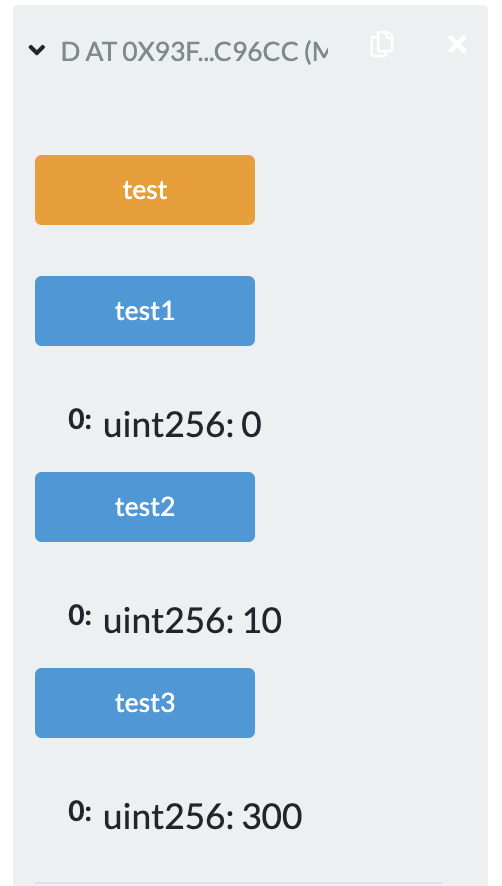
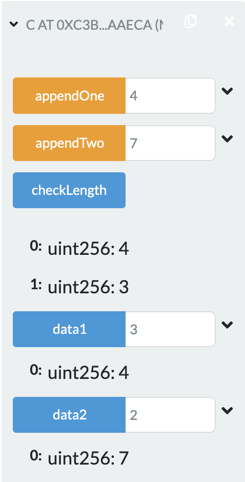
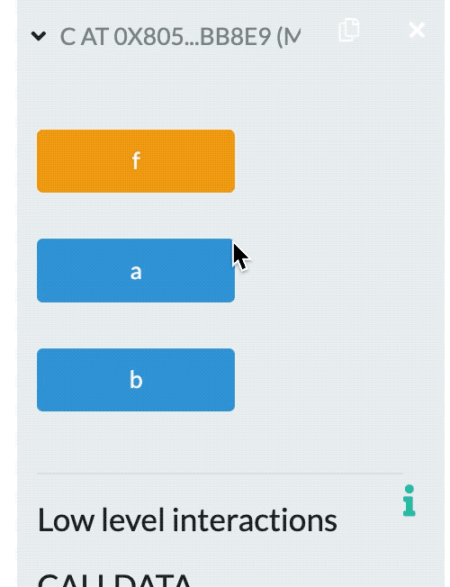

2022.2.21
Solidity语法
pragma (版本杂注)
pragma solidity ^0.4.0;import(导入其它源文件)
Solidity 所支持的导入语句import，语法同 JavaScript(从 ES6 起)非常类似
import "filename";
从“filename”中导入所有的全局符号到当前全局作用域中
import * as symbolName from "filename";
创建一个新的全局符号 symbolName，其成员均来自 “filename” 中全局符号
import {symbol1 as alias, symbol2} from "filename";
创建新的全局符号alias和symbol2，分别从"filename"引用 symbol1 和 symbol2
import "filename" as symbolName;
这条语句等同于 import * as symbolName from "filename";
数组(Array)
结构(Struct)
映射(Mapping)
address
address payable(v0.5.0引入)
两者区别和转换
<address>.balance (uint256):该地址的 ether 余额，以Wei为单位
<address payable>.transfer(uint256 amount):向指定地址发送数量为 amount 的 ether(以Wei为单位)，失败时抛出异常，发送 2300 gas 的矿工费，不可调节
<address payable>.send(uint256 amount) returns (bool):向指定地址发送数量为 amount的 ether(以Wei为单位)，失败时返回 false，发送 2300 gas 的矿工费用，不可调节
<address>.call(bytes memory) returns (bool, bytes memory):发出底层函数 CALL，失败时返回 false，发送所有可用 gas，可调节
<address>.delegatecall(bytes memory) returns (bool, bytes memory):发出底层函数 DELEGATECALL，代理调用，失败时返回 false，发送所有可用 gas，可调节
<address>.staticcall(bytes memory) returns (bool, bytes memory):发出底层函数 STATICCALL ，失败时返回 false，发送所有可用 gas，可调节
地址成员变量用法
balance 和 transfer
可以使用balance属性来查询一个地址的余额，可以使用transfer函数向一个payable地址发送 以太币Ether(以 wei 为单位)
xxxxxxxxxxaddress payable x = address(0x123);address myAddress = address(this);if (x.balance < 10 && myAddress.balance >= 10) x.transfer(10);send
call
也可以用call来实现转币的操作，通过添加.gas()和.value()修饰器:
xxxxxxxxxxnameReg.call.gas(1000000).value(1 ether)(abi.encodeWithSignature("register(string)", "MyName"));定长字符数组
节序列
有一个.length属性，返回数组长度(只读)
xxxxxxxxxxfunction test() public pure return(unit){ // 最后函数输出17 bytes17 a; return a.length;}变长字符数组
xxxxxxxxxxpragma solidity >=0.4.0 <0.6.0; contract Purchase { // 枚举类型、结构类型、状态变量需要在函数外声明！！ enum State { Created, Locked, Inactive } function test() public pure return(unit){ // 最后函数输出17 State st = State.Created; return uint(st); // Created, Locked, Inactive 分别是0,1,2 }}固定大小k和元素类型T的数组被写为T[k]，动态大小的数组为T[]。
例如，一个由5个uint动态数组组成的数组是uint[][5](定义的时候，和C语言顺序是不一样的)
要访问第三个动态数组中的第二个uint，可以使用x[2][1]（访问的时候，和C语言顺序是一样的）
越界访问数组，会导致调用失败回退
如果要添加新元素，则必须使用.push()或将.length增大, (如果存在storage里边，长度可以变，如果存在memory里边，长度不能变)
变长的storage数组和bytes(不包括string)有一个push()方法。可以将一个新元素附加到数组末端，返回值为当前长度
数组示例
xxxxxxxxxxpragma solidity >=0.4.16 <0.6.0; contract C { function f(uint len) public pure { uint[] memory a = new uint[](7); bytes memory b = new bytes(len); assert(a.length == 7); assert(b.length == len); a[6] = 8; } }xxxxxxxxxxpragma solidity >=0.4.0 <0.6.0; contract Ballot { struct Voter { uint weight; bool voted; uint vote; }}mapping(_KeyType => _ValueType)xxxxxxxxxxpragma solidity >=0.4.0 <0.6.0;contract MappingExample { mapping(address => uint) public balances; function update(uint newBalance) public { balances[msg.sender] = newBalance; }}
contract MappingUser { function f() public returns (uint) { MappingExample m = new MappingExample(); m.update(100); return m.balances(address(this)); }}xxxxxxxxxxpragma solidity ^0.8.0;
contract C{ mapping (address=>uint) public balances; constructor(){ balances[address(this)]=300; } function update(uint amount)public{ balances[msg.sender]=amount; }}
contract D{ uint public test1; uint public test2; uint public test3; function test()public{ C c = new C(); c.update(10); test1 = c.balances(msg.sender); test2 = c.balances(address(this)); test3 = c.balances(address(c)); }}应该返回300，10，0.因为c.update传入的参数，是调用他的地址，address(c)是c的地址，在合约C创建的时候，c的balances就是300；address(this)的this是D，fun()中的c.update传入了D的地址，所以d的balances经过updated成了10；c.balances(msg.sender)获取的是用户的地址对应的balances，并没有设置过，是0。
运行结果贴图：

强制指定的数据位置
默认数据位置
特别要求
xxxxxxxxxxpragma solidity ^0.8.0; contract C { uint[] public data1; // 默认存在storgae,不定长度只存头，剩下的散列出去 uint[] public data2; // 默认存在storgae function checkLength() view public returns(uint,uint){ return (data1.length,data2.length); } function appendOne(uint8 data) public{ append(data1,data); } function appendTwo(uint8 data) public { append(data2,data); } function append(uint[] storage d,uint8 data) internal { // d只是data1或data2的引用 d.push(data); }}运行截图：
（appendOne和appendTwo已经输入了多个数，截图展示的是最后一个；data1和data2是输入下标点击显示对应内容）

xxxxxxxxxx// 下面代码包含一个错误 pragma solidity ^0.4.0;contract C { uint public a; uint public b; uint[] data; function f() public { uint[] x; x.push(2); data = x; } }

这是因为uint[] x;定义的时候没有初始化，形成了野指针，指针默认指向程序开头。长度可变的数组在存储过程中，会存储这个数组的长度。所以会产生错误。
xxxxxxxxxx// 下面代码编译错误 pragma solidity ^0.4.0; contract C { uint[] x; function f(uint[] memoryArray) public { // 这个是可以的，memory给storage类型赋值：会进行数据的拷贝 x = memoryArray; // 这个是可以的，这个局部变量y只当一个引用 uint[] y = x; // 如果没越界是可以的 y[7]; // 是可以的，storage的可变数组可以直接用.length y.length = 2; // 是可以的，软删除（把长度置为零） delete x; // TypeError: Type uint256[] memory is not implicitly convertible to expected type uint256[] storage pointer. // memory类型的变长数组（可以认为无限大），不能直接指向y这一块很小的内存 y = memoryArray; delete y; g(x); h(x); } // 如果传入类型为storage，函数类型只能是internal或private而不能是public function g(uint[] storage storageArray) internal {} function h(uint[] memoryArray) public {} }function f(uint[] memoryArray) public {在0.8.n里边，需要指定成calldata或memory!uint[] y = x;在0.8.n里边也不被允许，需要指定类型。如果类型为memory后边的y.length=2就又错了y = memoryArray中的`y如果是storage类型的，就会失败；只有memory类型才会成功x
pragma solidity >0.4.22;contract Honeypot{ uint luckyNum = 52; uint public last; struct Guess{ address player; uint number; } Guess[] public guessHistory; address owner = msg.sender; function guess(uint _num) public payable{ Guess newGuess; newGuess.player = msg.sender; newGuess.number = _num; guessHistory.push( newGuess ); if( _num == luckyNum ) msg.sender.transfer( msg.value * 2 ); last = now; } }Guess newGuess;错误在这里！还是指针没赋初始值
函数的值类型有两类: 内部(internal)函数和外部(external)函数
external，public ，internal 或者 private; 对于状态变量,不能设置为 external ，默认是 internal。external:外部函数作为合约接口的一部分，意味着我们可以从其他合约和交易中调用。一个外部函数f不能从内部调用(即 f 不起作用，但 this.f() 可以)。 当收到大量数据的时候, 外部函数有时候会更有效率。public :public 函数是合约接口的一部分，可以在内部或通过消息调用。 对于 public 状态变量，会自动生成一个 getter 函数。internal:这些函数和状态变量只能是内部访问(即从当前合约内部或从它派生的合约访问)，不使用 this 调用。private:private函数和状态变量仅在当前定义它们的合约中使用，并且不能被派生合约使用。函数可见性实例
xxxxxxxxxxpragma solidity >=0.4.16 <0.6.0; contract C { function f(uint a) private pure returns (uint b) { return a + 1; } function setData(uint a) internal { data = a; } uint public data; function x() public { data = 3; // 内部访问 uint val = this.data(); // 外部访问 uint val2 = f(data); } }
pure: 纯函数，不允许修改或访问状态view: 不允许修改状态payable: 允许从消息调用中接收以太币Etherconstant: 与view相同，一般只修饰状态变量，不允许赋值 (除初始化以外)以下情况被认为是修改状态:
以下被认为是从状态中进行读取:
使用修饰器modifier可以轻松改变函数的行为。例如，它们可以在执行函数之前自动检查某个条件。修饰器modifier 是合约的可继承属性，并可能被派生合约覆盖
如果同一个函数有多个修饰器modifier，它们之间以空格隔开，修饰器modifier会依次检查执行。
Modifier示例
x
pragma solidity >=0.4.22 <0.6.0; contract Purchase { address public seller; modifier onlySeller() { // Modifier require( msg.sender == seller, "Only seller can call." ); _; // 这是一个占位符，代表被修饰代码 } function abort() public view onlySeller returns(...){ // Modifier usage // ... }}
x
pragma solidity >0.4.99 <0.6.0; contract Sink { // 这是一个回退函数 function() external payable { }} contract Test { // 这是一个回退函数 function() external { x = 1; } uint x; } contract Caller { // 把合约当成一个参数传了进来 function callTest(Test test) public returns (bool) { // 调用了一个没有定义的函数来触发回退函数 (bool success,) = address(test).call(abi.encodeWithSignature("nonExistingFunction()")); require(success); // 把一个普通的地址类型，转换成一个payable的地址类型 address payable testPayable = address(uint160(address(test))); return testPayable.send(2 ether); }}• 事件是以太坊EVM提供的一种日志基础设施。事件可以用来做操作记录，存储为日志。也可以用来实现一些交互功能，比如通知UI，返回函数调用结果等
• 当定义的事件触发时，我们可以将事件存储到EVM的交易日志中，日志是区块链中的一种特殊数据结构;日志与合约关联，与合约的存储合并存入区块链中;只要某个区块可以访问，其相关的日志就可以访 问;但在合约中，我们不能直接访问日志和事件数据
• 可以通过日志实现简单支付验证SPV(SimplifiedPayment Verification)，如果一个外部实体提供了一个带有这种证明的合约，它可以检查日志是否真实存在于区块链中
wei、 finney、 szabo 或 ether 来实现的，如果后面没有单位，缺省为 Wei。例如 2 ether == 2000 finney 的逻辑判断值为 true时间:秒是缺省时间单位，在时间单位之间，数字后面有 seconds、 minutes、 hours、 days、 weeks 和 years 的可以进行换算。规定一年365天。
这些后缀不能直接用在变量后边。如果想用时间单位(例如 days)来将输入变量 换算为时间，你可以用如下方式来完成:
xxxxxxxxxxfunction f(uint start, uint daysAfter) public { if (now >= start + daysAfter * 1 days) { // ... }}